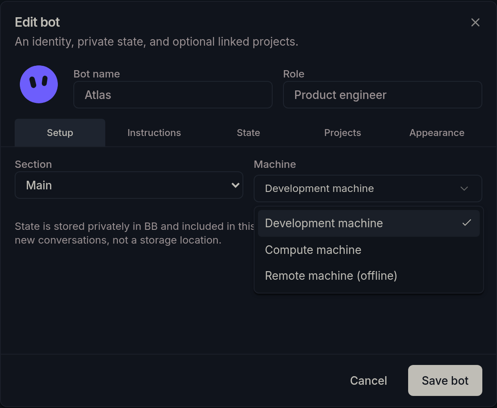

Installed and verified: BB now runs bots-sidebar@0.3.0-alpha.11 from this checkout, with no plugin status error. The coordinating migration verified preservation of existing bot identities, conversation bindings, project ownership, legacy metadata, and private exports. This audit independently checked the installed UI directly after cutover. No bot settings were saved during browser checks. Clients explicitly pinned to bots/bot-projects must reselect Bots Sidebar in Settings; Automatic works. No public push or release was performed.
bb plugin types confirmed SDK 0.4.47, matching running BB 0.42.1. Typecheck, all 327 tests across 28 files, and bb plugin build passed. Regression coverage checks enrolled/offline machine changes, missing machines, atomic rejection, stale revisions, persistence after reload, unchanged history, reconnect refresh, and out-of-order responses. Existing sidebar interaction suites still pass.
A TypeScript AST import inventory covered 75 TypeScript files and 338 import/export sites, finding no private BB imports or nonliteral dynamic imports. SDK imports use only the root, app, testing, and testing/app entrypoints. The SDK’s experimental text scanner produced false positives on store.require(bot.id) and ordinary declared dependencies; it was not treated as a clean automated pass. The AST check and source inspection provide the import evidence instead.
An isolated preview and then the directly installed BB UI checked Edit bot open, mouse highlight, keyboard opening/End/Enter, selected machine retention across tabs, cancellation, the + menu, portal scope attributes and computed colors, and hover archive visibility. No page errors occurred. This does not verify an actual remote provisioning run, all mobile layouts, or performance under a large synthetic history. The data cutover and byte/mode preservation were verified separately from this UI audit, not independently re-audited here. No destructive migration, live bot save, project creation, or conversation send was performed for this audit.
These illustrations have been regenerated with synthetic bots, machine labels, and conversations. They replace the original private-session captures and illustrate the checked controls; they are not screenshots of the original audit session.

Reviewed the manifest/build configuration, RPC schemas, backend registrations, SQLite store, migrations, private exports, semantic state actions, project creation/path handling, conversation ownership/tree logic, composer/worktree handoff, editor and project forms, menus, status/avatars, idle timers, client preferences, vendored overlay support, and regression tests. This is a source and behavior audit, not a penetration test or exhaustive proof of every host failure mode.
The installed declarations are authoritative. Relevant interfaces: PluginStorage, PluginAgents, MessageDispatchHookContext, PluginSidebarThreadActions, NewThreadComposerProps, PluginRealtimeConnectionState, and BbNavigate. The registry is pinned to the project’s existing BB 0.42.0 component source; its portal and motion helpers are already vendored.
{kind=link}
{kind=link}
{kind=link}